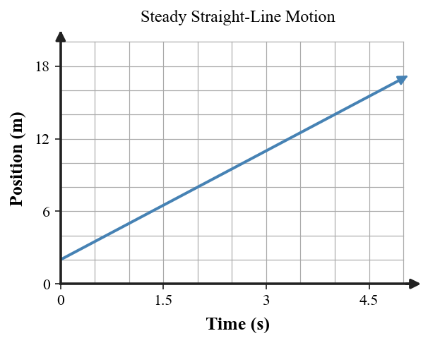

Forces and Newton’s First Law
Core idea: Newton’s First Law connects zero net force to unchanged velocity, and inertia is the property of matter that resists changes in motion.
You will use motion evidence and simple force models to distinguish inertia from force and to separate “no force” from “no net force.”
Learning Target
Students will explain Newton’s First Law and use the idea of inertia to predict whether an object’s motion will stay the same or change.
I can statements
- I can state Newton’s First Law in everyday language.
- I can explain that inertia is a property of matter, not a force.
- I can distinguish between “no forces acting” and “no net force acting.” and identify support force, weight, and other common forces in simple situations.
Vocabulary Preview
Skim the terms first. In the blank space, jot a word, example, picture, or question you already connect to each term. Definitions come later.
| Term | Before the reading: my connection / question |
|---|---|
| force | |
| inertia | |
| Newton's First Law | |
| net force | |
| support force | |
| weight |
What's To Come
This is a long-range preview for this section. Do not solve it yet. Circle anything familiar, underline symbols, labels, conditions, data, or features that seem important, and write short notes about what you think may matter later.
A low-friction cart is moving to the right. At point A a student stops touching it, yet the cart continues almost unchanged for several meters. Another student says, "Something must keep pushing the cart forward after the hand lets go."
What would you want to observe or measure before deciding whether that explanation is necessary?
Teaching note: Preserve uncertainty. Have students list evidence they would want: motion change, remaining contacts/interactions, and resistance/friction. Do not answer whether a forward force is required yet.
Content: Read, Represent, Annotate, Apply
Directions
Read in short chunks. Annotate the prose and representations together. Mark evidence, conditions, important quantities, labels, patterns, and questions.
Reading 1: Newton's First Law — Motion Does Not Need a Keeper
A force is a push or pull produced by an interaction. Newton's First Law says that an object continues at rest or continues with constant velocity in a straight line unless a nonzero net force acts on it. The word continues matters: force is needed to change motion, not to “use up” or maintain motion that is already unchanged.
The tablecloth demonstration makes the rest case visible. When the cloth is pulled quickly, the dishes tend to remain in their original state of rest. A low-friction cart or a spacecraft illustrates the moving case: if the net external force is zero, the object keeps the same speed and direction.


The graph is a useful reminder that “motion” and “change in motion” are different ideas. An object can keep changing position while its velocity remains unchanged.
Stop and Discuss
- After the hand releases a nearly frictionless cart, what observation would show that its velocity is staying nearly constant?
- Why does continuing to move not by itself prove that a forward force is acting?
Teaching note: Expected reasoning: constant spacing per equal time or a straight position-time pattern supports constant velocity. Motion itself is not evidence of a continuing forward interaction.
Example 1: Apply Newton's First Law to Constant Motion
A hockey puck glides nearly friction-free at constant velocity. If no nonzero net force acts on it, what does Newton's First Law predict?
Teacher answer: It continues with constant velocity in a straight line.
You Try It 1: Predict Motion with Zero Net Force
A cart is initially at rest and the net force remains zero. Predict its motion.
Teacher answer: It remains at rest. Zero net force does not create a change in motion.
Reading 2: Inertia Is a Property, Not a Force
Inertia is the tendency of matter to resist a change in its state of motion. It is a property of the object, not a force arrow that acts in the direction of motion. When a bus brakes, a loose backpack continues with approximately its previous velocity until an interaction with the seat, floor, or another object changes that motion.

A useful force-model check is to ask, “What object or interaction is producing this force?” If there is no interacting object to name, the arrow may be a mislabeled motion idea rather than a real force.
Stop and Discuss
- What is wrong with drawing an arrow labeled “inertia force” on an object just because it is moving?
- In the braking-bus example, what real interaction eventually changes the backpack’s motion?
Teaching note: Expected reasoning: inertia is a property, not an interaction. A real contact such as the seat, floor, or strap ultimately changes the backpack motion.
Example 2: Identify the Inertia Misconception
A student says, "Inertia pushes a moving backpack forward when the bus stops." Identify the error.
Teacher answer: Inertia is not a force. It is the tendency of matter to resist a change in motion.
You Try It 2: Explain Motion Without an 'Inertia Force'
Rewrite the explanation for why a loose backpack moves forward relative to a bus that brakes.
Teacher answer: The backpack tends to keep its previous velocity while the bus slows, so it moves forward relative to the bus until another force changes its motion.
Reading 3: Forces Can Be Present While Net Force Is Zero
The net force is the vector sum of all forces acting on the chosen object. Zero net force does not require zero individual forces. A book resting on a table has downward weight, the gravitational force on the book, and an upward support force from the table. If those vertical forces are equal and opposite, they cancel in the net-force calculation.

This is the difference between “no forces acting” and “no net force acting.” A spacecraft far from strong interactions is a useful near-example of very small external forces; a book on a table is an example of several forces whose vector sum is zero.
Stop and Discuss
- For a book at rest, what evidence tells you that the vertical forces must balance?
- How is “no force” different from “zero net force”? Give one situation for each idea.
Teaching note: Expected reasoning: unchanged rest is consistent with zero net force, so upward support and downward weight balance. “No force” means no individual forces; “zero net” allows forces that cancel.
Example 3: Name the Forces on a Supported Object
A book rests on a table. Name the two main vertical forces acting on the book.
Teacher answer: Earth pulls downward on the book with weight, and the table pushes upward with a support/normal force.
You Try It 3: Use Balanced Vertical Forces
If the vertical forces on the resting book are equal in magnitude, what is the net vertical force? Explain.
Teacher answer: The net vertical force is 0 N because the upward support force and downward weight cancel.
Example 4: Separate Force from Continued Motion
A spacecraft coasts far from strong external interactions with its engines off. Does it need a forward force to keep moving at constant velocity?
Teacher answer: No. Constant velocity is consistent with zero net force.
You Try It 4: Predict the Effect of Nonzero Net Force
What would a nonzero net force do to the spacecraft motion?
Teacher answer: It would change the velocity: speed, direction, or both.
Vocabulary Definitions
| Term | Meaning in this section |
|---|---|
| force | A push or pull produced by an interaction between objects. |
| inertia | A property of matter that resists changes in motion; inertia is not itself a force. |
| Newton's First Law | An object continues at rest or at constant velocity in a straight line unless acted on by a nonzero net force. |
| net force | The vector sum of all forces acting on the chosen object. |
| support force | A contact force from a supporting surface that pushes on an object. |
| weight | The gravitational force acting on an object. |
Summary
- Zero net force means velocity does not change: an object remains at rest or keeps constant straight-line motion.
- Inertia is a property of matter, not an extra force that pushes in the direction of motion.
- Forces come from interactions; every force arrow should have a physical source.
- Several nonzero forces can cancel to give a net force of zero.
- A nonzero net force changes velocity — speed, direction, or both.
Teaching note: Press students to say “zero net force” rather than “no forces” when they mean balanced interactions.
Common Mistakes
| Mistake | Why it is tempting | Check instead |
|---|---|---|
| “A moving object needs a forward net force.” | Everyday friction often hides the zero-net-force case. | Ask whether velocity is changing, not whether the object is moving. |
| Drawing an “inertia force.” | The object keeps moving, so the motion feels like a push. | Inertia is a property; name the interacting object for every real force. |
| “At rest means no forces.” | No motion can look like no activity. | Check for forces that cancel, such as support and weight. |
| Using one force as the net force. | A single arrow is easier to notice. | List all forces on the chosen object, then add them as vectors. |